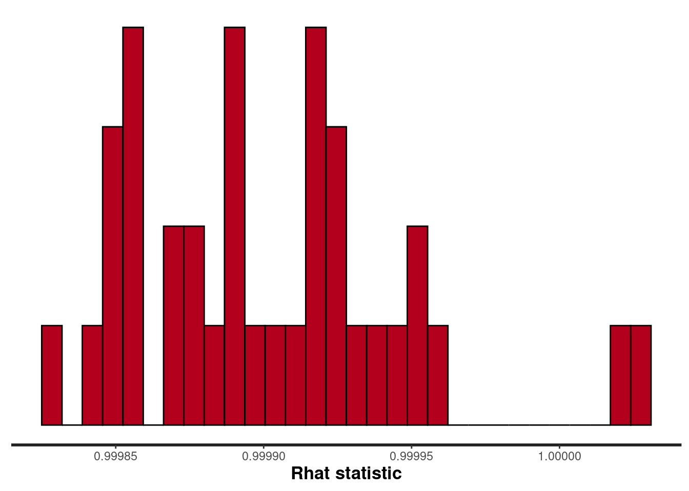
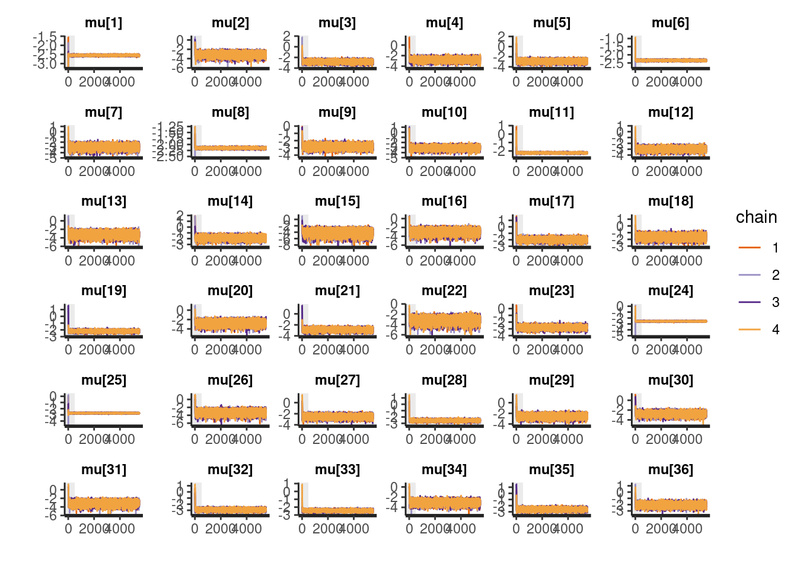
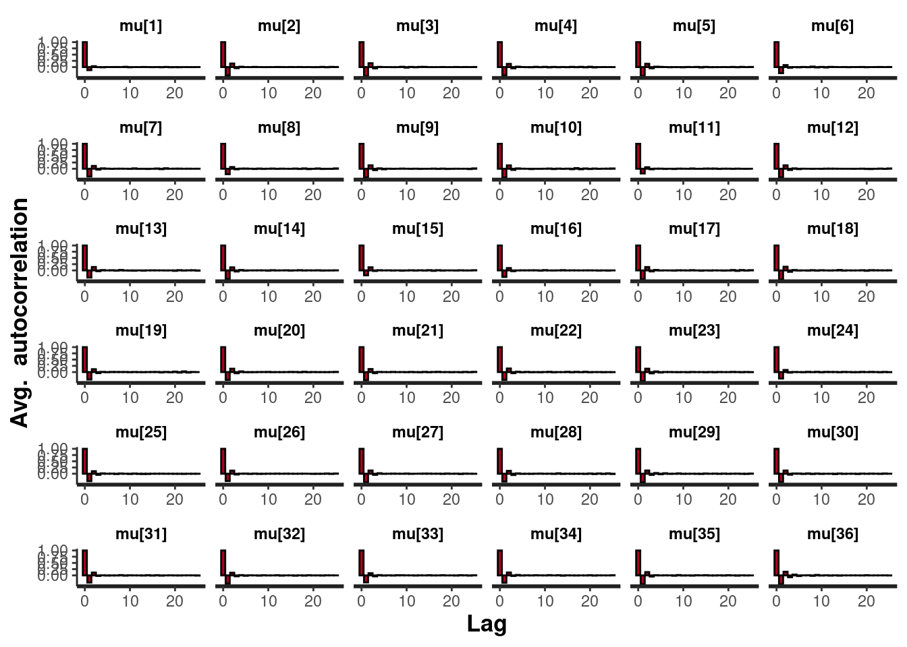
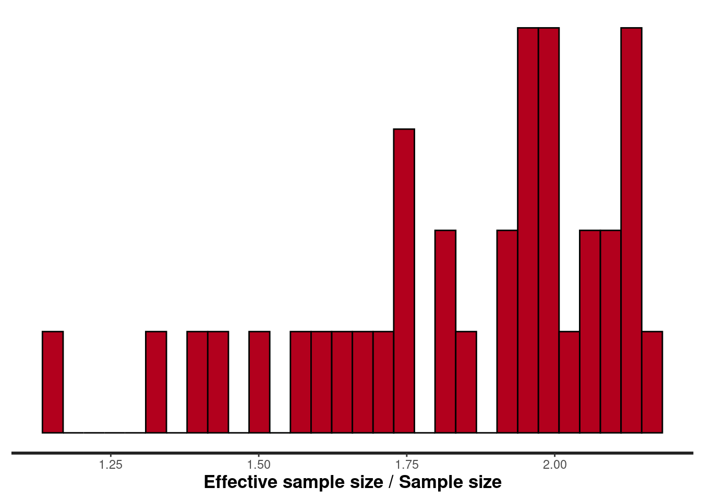
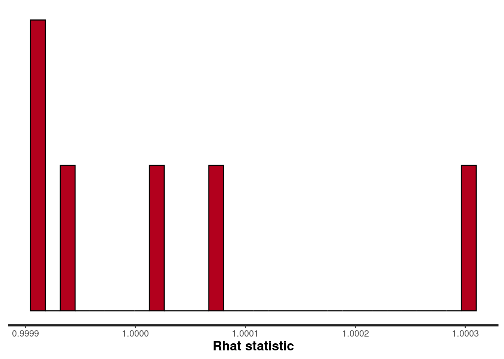
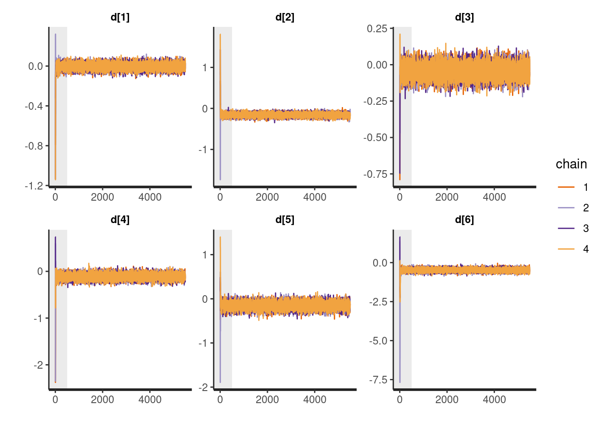
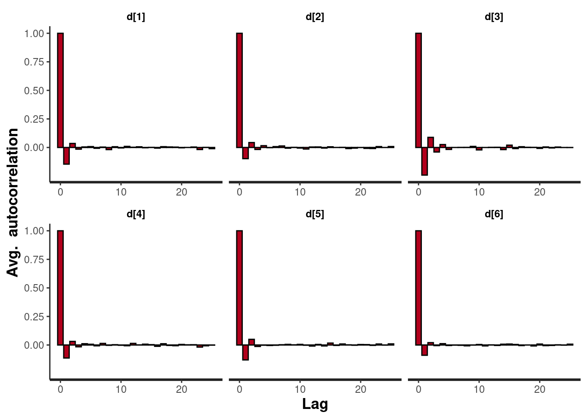
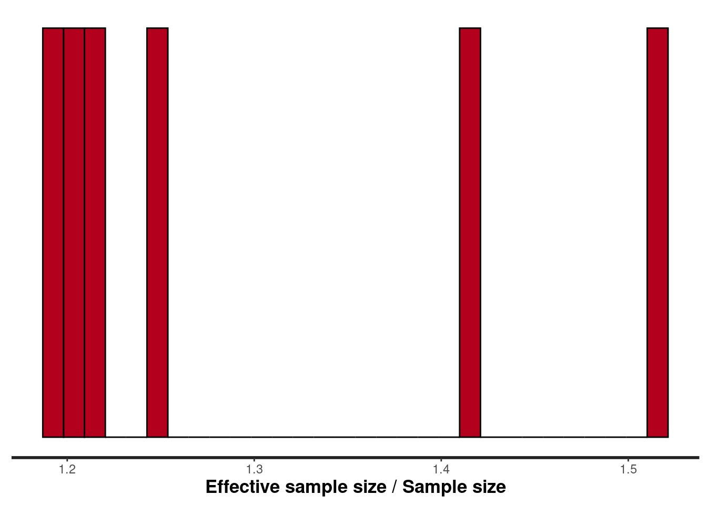

ネットワークメタ分析
ネットワークメタ分析
治療Aと治療Bを直接比較した臨床試験の効果を統合するときに使用されるのがメタ分析です。ただ，治療Aと治療B，治療Aと治療Cの直接比較はあるけど，治療Bと治療Cを比較した研究はない（もしくは少ない）状況もあります。その場合に，治療Aと治療B，治療Aと治療Cの直接比較の効果から，治療Bと治療Cの間接比較の効果を検討するネットワークメタ分析という方法があります。以下では，ネットワークメタ分析についてまとめています。
Rstanでベイジアンネットワークメタ分析
ネットワークメタ分析は，３つ以上の治療の比較が可能なメタ分析です。これまでよく行われていたメタ分析（一対比較のメタ分析）は，２つの治療間の直接比較の結果を統合するものでした（一対比較のベイジアンメタ分析については，こちらを参照ください）。一方，ネットワークメタ分析では，３つ以上の治療について，直接的な比較だけでなく，間接的な比較（別の２つ以上の治療薬の効果から，検討されていない２つの治療薬間の差を推定する）も行って，治療効果の統合をします。ネットワークメタ分析の利点としては，以下の３点があります。
- 間接比較ができる
- 間接と直接比較を統合し，より精度を高められる
- 複数の治療が比較でき，効果のランキングが作れる
ネットワークメタ分析を学ぶ場合，『Network Meta-Analysis for Decision-Making』](https://www.amazon.co.jp/dp/1118647505/ref=cm_sw_em_r_mt_dp_U_i6l0EbR0Z21F1)は，丁寧な説明がされており，おすすめの書籍です。ただ，記載されているコードはWinBUGSのものです。Mac & Stanユーザーとしては，WinBUGSはきついので，第2章で紹介されている固定効果モデルのネットワークメタ分析をStanコードで書き直したものを以下で説明します。
使用するパッケージ
以下のパッケージを使います。これら一式がインストールされたDockerfileも公開しているので，こちらの記事も参照ください。
library(rstan)
library(tidybayes)
library(tidyverse)
library(bayesplot)
library(loo)
library(gemtc)
library(gridExtra)データ
使用するのは，『Network Meta-Analysis for Decision-Making』の２章で紹介されている血栓溶解薬のデータです(Caldwell et la., 2005のデータ)。７つの治療薬について検討した36試験のデータです。
変数名について説明します。studyは研究のID，treatmentは治療の種類，deadは死者数，sampleSizeはその治療に参加した患者数です。baselineは，当該試験のベースラインとなる治療です(今回，SKをリファレンスの治療にします。多く試験ではSKがベースラインになりますが，SKが含まれない試験もあり，その場合は他の薬剤がベースラインになります)。treatmentNameは治療薬名，studyNameは第1著者の姓か研究プロジェクト名， studyYearは論文の出版年です。治療の種類のtreatmentと治療薬名のtreatmentNameの組み合わせは以下になります。
- 0 = SK
- 1 = t_PA
- 2 = Acc_t_PA
- 3 = SK_t_PA
- 4 = r_PA
- 5 = TNK
- 6 = PTCA
以下を実行して，Rにデータを読み込んでみましょう！
study <- c(1,2,3,4,5,6,7,8,9,10,11,12,13,14,15,16,17,18,19,20,21,22,23,24,25,26,27,28,29,30,31,32,33,34,35,36,1,2,3,4,5,6,7,8,9,10,11,12,13,14,15,16,17,18,19,20,21,22,23,24,25,26,27,28,29,30,31,32,33,34,35,36,1)
treatment <- c(0,0,0,0,0,0,0,0,0,0,0,0,0,0,0,0,0,0,0,1,1,1,2,2,2,2,2,2,2,2,2,2,2,2,2,2,2,1,1,1,1,1,1,1,1,3,4,6,6,6,6,6,6,6,6,6,6,6,4,4,5,6,6,6,6,6,6,6,6,6,6,6,3)
dead <- c(1472,3,12,7,10,887,5,1455,9,4,285,11,1,8,1,4,14,9,42,2,13,2,13,356,522,3,10,40,5,5,2,19,59,5,16,8,652,3,7,4,5,929,2,1418,6,6,270,2,3,5,1,0,7,3,29,3,5,2,7,757,523,1,3,32,5,3,3,20,52,2,12,6,723)
sampleSize <- c(20251,65,159,85,135,10396,63,13780,130,107,3004,149,50,58,53,45,99,41,421,44,200,56,155,4921,8488,55,94,573,75,69,61,419,782,81,226,66,10396,64,157,86,135,10372,59,13746,123,109,3006,152,50,54,47,42,101,46,429,46,195,47,169,10138,8461,55,95,565,75,71,62,421,790,81,225,71,10374)
baseline <- c(0,0,0,0,0,0,0,0,0,0,0,0,0,0,0,0,0,0,0,1,1,1,2,2,2,2,2,2,2,2,2,2,2,2,2,2,0,0,0,0,0,0,0,0,0,0,0,0,0,0,0,0,0,0,0,1,1,1,2,2,2,2,2,2,2,2,2,2,2,2,2,2,0)
treatmentName <- c("SK","SK","SK","SK","SK","SK","SK","SK","SK","SK","SK","SK","SK","SK","SK","SK","SK","SK","SK","t_PA","t_PA","t_PA","Acc_t_PA","Acc_t_PA","Acc_t_PA","Acc_t_PA","Acc_t_PA","Acc_t_PA","Acc_t_PA","Acc_t_PA","Acc_t_PA","Acc_t_PA","Acc_t_PA","Acc_t_PA","Acc_t_PA","Acc_t_PA","Acc_t_PA","t_PA","t_PA","t_PA","t_PA","t_PA","t_PA","t_PA","t_PA","SK_t_PA","r_PA","PTCA","PTCA","PTCA","PTCA","PTCA","PTCA","PTCA","PTCA","PTCA","PTCA","PTCA","r_PA","r_PA","TNK","PTCA","PTCA","PTCA","PTCA","PTCA","PTCA","PTCA","PTCA","PTCA","PTCA","PTCA","SK_t_PA")
studyName <- c("GUSTO-1","ECSG","TIMI-1","PAIMS","White","GISSI-2","Cherng","ISIS-3","CI","KAMIT","INJECT","Zijlstra","Riberio","Grinfeld","Zijlstra","Akhras","Widimsky","DeBoer","Widimsky","DeWood","Grines","Gibbons","RAPID-2","GUSTO-3","ASSENT-2","Ribichini","Garcia","GUSTO-2","Vermeer","Schomig","LeMay","Bonnefoy","Andersen","Kastrati","Aversano","Grines","GUSTO-1","ECSG","TIMI-1","PAIMS","White","GISSI-2","Cherng","ISIS-3","CI","KAMIT","INJECT","Zijlstra","Riberio","Grinfeld","Zijlstra","Akhras","Widimsky","DeBoer","Widimsky","DeWood","Grines","Gibbons","RAPID-2","GUSTO-3","ASSENT-2","Ribichini","Garcia","GUSTO-2","Vermeer","Schomig","LeMay","Bonnefoy","Andersen","Kastrati","Aversano","Grines","GUSTO-1")
studyYear <- c(1993,1985,1987,1989,1989,1990,1992,1992,1993,1991,1995,1993,1993,1996,1997,1997,2000,2002,2002,1990,1993,1993,1996,1997,1999,1996,1997,1997,1999,2000,2001,2002,2002,2002,2002,2002,1993,1985,1987,1989,1989,1990,1992,1992,1993,1991,1995,1993,1993,1996,1997,1997,2000,2002,2002,1990,1993,1993,1996,1997,1999,1996,1997,1997,1999,2000,2001,2002,2002,2002,2002,2002,1993)
# データフレームにして確認
data_net <- tibble(study,treatment,dead,sampleSize,baseline,treatmentName,studyName,studyYear)
data_net## # A tibble: 73 x 8
## study treatment dead sampleSize baseline treatmentName studyName studyYear
## <dbl> <dbl> <dbl> <dbl> <dbl> <chr> <chr> <dbl>
## 1 1 0 1472 20251 0 SK GUSTO-1 1993
## 2 2 0 3 65 0 SK ECSG 1985
## 3 3 0 12 159 0 SK TIMI-1 1987
## 4 4 0 7 85 0 SK PAIMS 1989
## 5 5 0 10 135 0 SK White 1989
## 6 6 0 887 10396 0 SK GISSI-2 1990
## 7 7 0 5 63 0 SK Cherng 1992
## 8 8 0 1455 13780 0 SK ISIS-3 1992
## 9 9 0 9 130 0 SK CI 1993
## 10 10 0 4 107 0 SK KAMIT 1991
## # … with 63 more rows今回のデータのネットワークを書いてみます。以降では，基本的にはStanを使いますが，ネットワークは，JAGSベースのネットワークメタ分析するGeMTCパッケージを使うと簡単にプロットしてくれます。これは便利なパッケージですが，今回はプロットだけに使います。GeMTC用に少しデータセットを変えて，mtc.network()で読み込み，プロットします。
data_net <- data.frame(study,treatmentName,dead,sampleSize)
names(data_net) <- c("study","treatment","responders","sampleSize")
data_net_GeM <- mtc.network(data_net)
plot(data_net_GeM)
以下のような感じです。ネットワークのノード（丸と丸をつなぐ線です）が太いほど，試験数が多いことを表しています。これをみると，SKは他の多くの治療薬と直接的に比較されていますが，TNKはSKとは直接的な比較がなされていないことが分かります。
ネットワークメタ分析(固定効果モデル)のStanコード
まず，data{}ブロックにおいて，使用するデータの定義をしています。教科書は行列形式でdeadやsampleSizeを読み込む形式ですが，少し今後の拡張を考えると面倒です(WinBUGSでやりやすいこととStanでやりやすいことは微妙に違ったりします)。まずlong型のデータセットにしてから（上記のデータはすでにそうなっています），各列をStanに読み込ませます。
parameters{}ブロックでは，推定するパラメータとして，mu(各研究におけるベースライン，リファレンスのSKのときもあれば他の治療の時もあります)とd(各治療におけるベースラインに対する相対効果)を準備しています。
model{}ブロックでは，死者数が二項分布に従うとして，死者数が，binomial_logit(試験の参加人数，死亡確率を構成する式)から生成されます。その場合の，死亡確率を構成する式（線形予測子）には，４つのパターンがあります。
- ベースラインがリファレンス(SK)でかつ，その治療がSKの時，線形予測子は，muのみ
- ベースラインがリファレンス(SK)でかつ，その治療がSK以外の時，線形予測子は，mu+d
- ベースラインがリファレンス(SK)以外でかつ，その治療がベースラインの治療の時，線形予測子は，muのみ
- ベースラインがリファレンス(SK)以外でかつ，その治療がベースライン以外の時，線形予測子は，mu+d(当該治療)-d(ベースライン)
四番目が間接比較になります。ネットワークメタ分析では，リファレンスに対する相対効果を推定することで，最終的にランキングなどを作ることができます。この相対効果がdになります。ただ，すべての治療がリファレンスと比較されているわけではないので，間接比較が必要になります。例えば，TNKは，Acc_t_PAとのみ比較をしていますので，間接比較によって，リファレンス(SK)と比較した際のTNKの相対効果も推定する必要があります。TNKによる死亡率は，mu+d(Acc_t_PA→TNK)で計算されます。ただ，今回は，リファレンスからのTNKの相対効果を推定したいので，d(Acc_t_PA→TNK)を，d(SK→TNK)からd(SK→Acc_t_PA)を引くことで計算します（これが上記のd(当該治療)-d(ベースライン)に相当します）。こういう感じで，間接効果も組み込んだ生成モデルを作ることで，間接効果の推定を行います。
なお，dとmuの事前分布としては，幅のひろーい正規分布としました。
generated quantities{}ブロックでは，exp()でdのオッズ比を計算しているのですが，dの可能な組み合わせすべての計算をしています（実際に検討されてない治療間の相対効果も計算している）。その計算が，どうにもStanでスマートにできなかったので，べた書きしています・・・（今後変更できるなら，変更したいです）。最後に，モデル比較用の対数尤度(log_lik)も計算しています。
以下のStanコードを“netmeta_network_fixed_effect.stan”という名前で保存します。
data{
int ld; // length of data
int nct; // number of compared treatment
int ns; // number of study
int study[ld]; // vector of the study id
int treatment[ld]; // vector of the treatment id
int dead[ld]; // vector of the number of dead
int sampleSize[ld]; // vector of the number of patient
int baseline[ld]; // vector of baseline treatment each study
}
parameters{
real d[nct];
real mu[ns];
}
model{
for(i in 1:ld){
if(baseline[i]==0){
if(treatment[i]==0){
dead[i] ~ binomial_logit(sampleSize[i],mu[study[i]]);
}else{
dead[i] ~ binomial_logit(sampleSize[i],mu[study[i]]+d[treatment[i]]);
}
}else{
if(baseline[i]==treatment[i]){
dead[i] ~ binomial_logit(sampleSize[i],mu[study[i]]);
}else{
dead[i] ~ binomial_logit(sampleSize[i],mu[study[i]]+d[treatment[i]]-d[baseline[i]]);
}
}
}
# prior
d~normal(0,10000);
mu~normal(0,10000);
}
generated quantities{
real OR[21];
real log_lik[ld];
OR[1] = exp(d[1]);
OR[2] = exp(d[2]);
OR[3] = exp(d[3]);
OR[4] = exp(d[4]);
OR[5] = exp(d[5]);
OR[6] = exp(d[6]);
OR[7] = exp(d[2]-d[1]);
OR[8] = exp(d[3]-d[1]);
OR[9] = exp(d[4]-d[1]);
OR[10] = exp(d[5]-d[1]);
OR[11] = exp(d[6]-d[1]);
OR[12] = exp(d[3]-d[2]);
OR[13] = exp(d[4]-d[2]);
OR[14] = exp(d[5]-d[2]);
OR[15] = exp(d[6]-d[2]);
OR[16] = exp(d[4]-d[3]);
OR[17] = exp(d[5]-d[3]);
OR[18] = exp(d[6]-d[3]);
OR[19] = exp(d[5]-d[4]);
OR[20] = exp(d[6]-d[4]);
OR[21] = exp(d[6]-d[5]);
for(k in 1:ld){
if(baseline[k]==0){
if(treatment[k]==0){
log_lik[k] = binomial_logit_lpmf(dead[k]|sampleSize[k],mu[study[k]]);
}else{
log_lik[k] = binomial_logit_lpmf(dead[k]|sampleSize[k],mu[study[k]]+d[treatment[k]]);
}
}else{
if(baseline[k]==treatment[k]){
log_lik[k] = binomial_logit_lpmf(dead[k]|sampleSize[k],mu[study[k]]);
}else{
log_lik[k] = binomial_logit_lpmf(dead[k]|sampleSize[k],mu[study[k]]+d[treatment[k]]-d[baseline[k]]);
}
}
}
}
パラメータ推定
Stanコードが書けましたので，早速，コンパイル＆サンプリングをします。
ld = length(study)
rstan_options(auto_write = TRUE)
options(mc.cores = parallel::detectCores())
options(max.print = 99999)
fit_fixed_net <-stan("netmeta_network_fixed_effect.stan",data=list(ld = ld, nct = 6, ns = 36, study = study, treatment = treatment, dead = dead, sampleSize = sampleSize,baseline=baseline), chains = 4, iter = 5500, warmup = 500, thin = 1)推定結果の要約
結果を簡単に確認します。
print(fit_fixed_net,digit=4)## Inference for Stan model: netmeta_network_fixed_effect.
## 4 chains, each with iter=5500; warmup=500; thin=1;
## post-warmup draws per chain=5000, total post-warmup draws=20000.
##
## mean se_mean sd 2.5% 25% 50%
## d[1] -0.0032 0.0002 0.0305 -0.0633 -0.0235 -0.0031
## d[2] -0.1573 0.0003 0.0435 -0.2427 -0.1865 -0.1574
## d[3] -0.0431 0.0003 0.0463 -0.1336 -0.0740 -0.0429
## d[4] -0.1104 0.0004 0.0605 -0.2281 -0.1520 -0.1107
## d[5] -0.1510 0.0005 0.0784 -0.3051 -0.2029 -0.1512
## d[6] -0.4746 0.0007 0.1009 -0.6726 -0.5422 -0.4749
## mu[1] -2.5475 0.0002 0.0259 -2.5980 -2.5649 -2.5475
## mu[2] -3.1005 0.0023 0.4336 -4.0274 -3.3722 -3.0725
## mu[3] -2.7742 0.0012 0.2412 -3.2780 -2.9302 -2.7644
## mu[4] -2.7208 0.0016 0.3212 -3.4050 -2.9280 -2.7071
## mu[5] -2.8631 0.0014 0.2719 -3.4268 -3.0417 -2.8530
## mu[6] -2.3439 0.0002 0.0287 -2.4007 -2.3631 -2.3440
## mu[7] -2.8653 0.0020 0.4026 -3.7279 -3.1203 -2.8414
## mu[8] -2.1483 0.0001 0.0249 -2.1970 -2.1652 -2.1482
## mu[9] -2.7943 0.0013 0.2729 -3.3581 -2.9684 -2.7855
## mu[10] -3.0542 0.0017 0.3328 -3.7467 -3.2686 -3.0377
## mu[11] -2.2324 0.0003 0.0530 -2.3362 -2.2680 -2.2320
## mu[12] -2.9226 0.0015 0.2895 -3.5238 -3.1110 -2.9088
## mu[13] -3.0914 0.0029 0.5359 -4.2486 -3.4207 -3.0514
## mu[14] -1.8539 0.0015 0.3032 -2.4813 -2.0533 -1.8417
## mu[15] -3.9651 0.0050 0.8130 -5.8315 -4.4314 -3.8643
## mu[16] -2.9517 0.0031 0.5523 -4.1548 -3.2979 -2.9075
## mu[17] -1.9496 0.0012 0.2391 -2.4355 -2.1084 -1.9426
## mu[18] -1.6375 0.0016 0.3216 -2.2996 -1.8469 -1.6279
## mu[19] -2.1857 0.0007 0.1304 -2.4467 -2.2728 -2.1841
## mu[20] -2.7161 0.0025 0.4831 -3.7643 -3.0176 -2.6856
## mu[21] -2.8622 0.0012 0.2485 -3.3741 -3.0260 -2.8543
## mu[22] -3.1421 0.0029 0.5439 -4.3305 -3.4743 -3.0964
## mu[23] -2.7702 0.0011 0.2285 -3.2347 -2.9219 -2.7633
## mu[24] -2.5605 0.0003 0.0488 -2.6562 -2.5932 -2.5603
## mu[25] -2.7264 0.0002 0.0458 -2.8178 -2.7574 -2.7260
## mu[26] -3.2604 0.0031 0.5481 -4.4468 -3.5964 -3.2197
## mu[27] -2.4948 0.0014 0.2957 -3.1031 -2.6872 -2.4817
## mu[28] -2.5555 0.0007 0.1299 -2.8121 -2.6422 -2.5545
## mu[29] -2.5397 0.0017 0.3391 -3.2440 -2.7590 -2.5264
## mu[30] -2.7160 0.0019 0.3804 -3.5193 -2.9580 -2.6976
## mu[31] -3.1156 0.0026 0.4887 -4.1730 -3.4254 -3.0789
## mu[32] -2.8889 0.0008 0.1715 -3.2339 -3.0019 -2.8859
## mu[33] -2.4339 0.0006 0.1076 -2.6503 -2.5055 -2.4326
## mu[34] -3.0189 0.0021 0.3990 -3.8725 -3.2705 -2.9966
## mu[35] -2.5859 0.0010 0.1999 -2.9996 -2.7165 -2.5800
## mu[36] -2.0511 0.0015 0.2938 -2.6618 -2.2424 -2.0414
## OR[1] 0.9973 0.0002 0.0304 0.9387 0.9768 0.9969
## OR[2] 0.8552 0.0003 0.0372 0.7845 0.8299 0.8544
## OR[3] 0.9588 0.0003 0.0444 0.8749 0.9286 0.9580
## OR[4] 0.8971 0.0004 0.0544 0.7960 0.8590 0.8952
## OR[5] 0.8625 0.0004 0.0677 0.7370 0.8164 0.8597
## OR[6] 0.6253 0.0004 0.0633 0.5104 0.5815 0.6219
## OR[7] 0.8584 0.0003 0.0455 0.7730 0.8269 0.8570
## OR[8] 0.9623 0.0003 0.0531 0.8625 0.9262 0.9613
## OR[9] 0.9004 0.0004 0.0608 0.7865 0.8580 0.8981
## OR[10] 0.8656 0.0005 0.0729 0.7322 0.8149 0.8621
## OR[11] 0.6275 0.0004 0.0660 0.5089 0.5819 0.6237
## OR[12] 1.1226 0.0003 0.0608 1.0073 1.0812 1.1213
## OR[13] 1.0497 0.0003 0.0582 0.9411 1.0097 1.0477
## OR[14] 1.0084 0.0004 0.0653 0.8859 0.9634 1.0068
## OR[15] 0.7316 0.0005 0.0719 0.6006 0.6815 0.7282
## OR[16] 0.9373 0.0004 0.0668 0.8134 0.8913 0.9350
## OR[17] 0.9009 0.0004 0.0764 0.7628 0.8479 0.8974
## OR[18] 0.6533 0.0004 0.0701 0.5280 0.6039 0.6498
## OR[19] 0.9636 0.0005 0.0820 0.8121 0.9067 0.9608
## OR[20] 0.6990 0.0005 0.0775 0.5595 0.6451 0.6949
## OR[21] 0.7285 0.0005 0.0857 0.5738 0.6689 0.7235
## log_lik[1] -4.9879 0.0057 0.6532 -6.8483 -5.1407 -4.7348
## log_lik[2] -1.7278 0.0042 0.3596 -2.7436 -1.8115 -1.5868
## log_lik[3] -2.7545 0.0058 0.7397 -4.8066 -3.0212 -2.4930
## log_lik[4] -2.3962 0.0056 0.6648 -4.2917 -2.6190 -2.1525
## log_lik[5] -2.7729 0.0064 0.8162 -4.9778 -3.1084 -2.5001
## log_lik[6] -4.9378 0.0061 0.8308 -7.2634 -5.2207 -4.6276
## log_lik[7] -2.3081 0.0061 0.7394 -4.3708 -2.5662 -2.0383
## log_lik[8] -4.9913 0.0056 0.6790 -6.9136 -5.1651 -4.7293
## log_lik[9] -2.4042 0.0051 0.5539 -3.9560 -2.5496 -2.1948
## log_lik[10] -1.9433 0.0039 0.4456 -3.2036 -2.0611 -1.7717
## log_lik[11] -4.1338 0.0049 0.6032 -5.8388 -4.2844 -3.8977
## log_lik[12] -3.0925 0.0078 1.0742 -5.9288 -3.5541 -2.7509
## log_lik[13] -1.6929 0.0043 0.7504 -3.7032 -2.0147 -1.4517
## log_lik[14] -2.2059 0.0052 0.4338 -3.4532 -2.3093 -2.0378
## log_lik[15] -1.2968 0.0046 0.4302 -2.5308 -1.3960 -1.1283
## log_lik[16] -2.5039 0.0088 1.0631 -5.4081 -2.9160 -2.1301
## log_lik[17] -2.5991 0.0056 0.5861 -4.2611 -2.7516 -2.3725
## log_lik[18] -2.6347 0.0067 0.8490 -4.9408 -2.9564 -2.3404
## log_lik[19] -3.0654 0.0051 0.4652 -4.3678 -3.1712 -2.8885
## log_lik[20] -1.6905 0.0043 0.5404 -3.2218 -1.8375 -1.4796
## log_lik[21] -2.7095 0.0059 0.6949 -4.6752 -2.9217 -2.4467
## log_lik[22] -1.6330 0.0048 0.4902 -3.0236 -1.7453 -1.4432
## log_lik[23] -3.1599 0.0060 0.9327 -5.5420 -3.6173 -2.9106
## log_lik[24] -4.2229 0.0055 0.5665 -5.8258 -4.3586 -4.0032
## log_lik[25] -4.5297 0.0077 0.7206 -6.5823 -4.6950 -4.2496
## log_lik[26] -1.9658 0.0066 0.6597 -3.8166 -2.1472 -1.7116
## log_lik[27] -2.8549 0.0070 0.9309 -5.3277 -3.2321 -2.5438
## log_lik[28] -3.0743 0.0051 0.4911 -4.4544 -3.1845 -2.8892
## log_lik[29] -2.0191 0.0047 0.4413 -3.2665 -2.1206 -1.8480
## log_lik[30] -2.0505 0.0052 0.4878 -3.4273 -2.1639 -1.8639
## log_lik[31] -1.6574 0.0045 0.5041 -3.0886 -1.7849 -1.4612
## log_lik[32] -2.9171 0.0051 0.6823 -4.8267 -3.1493 -2.6571
## log_lik[33] -3.3992 0.0055 0.6465 -5.2394 -3.5701 -3.1521
## log_lik[34] -2.1815 0.0062 0.6319 -3.9832 -2.3525 -1.9392
## log_lik[35] -2.5680 0.0047 0.4123 -3.7895 -2.6637 -2.4078
## log_lik[36] -2.2067 0.0050 0.4250 -3.4197 -2.3032 -2.0431
## log_lik[37] -4.5563 0.0052 0.6140 -6.3314 -4.6859 -4.3197
## log_lik[38] -1.7274 0.0042 0.3597 -2.7444 -1.8115 -1.5874
## log_lik[39] -2.4335 0.0043 0.6345 -4.1651 -2.6757 -2.2167
## log_lik[40] -2.0457 0.0044 0.5533 -3.5997 -2.2248 -1.8415
## log_lik[41] -2.3916 0.0043 0.7087 -4.2917 -2.6969 -2.1659
## log_lik[42] -4.9634 0.0060 0.8309 -7.2807 -5.2461 -4.6570
## log_lik[43] -1.7914 0.0038 0.5841 -3.3992 -2.0068 -1.5896
## log_lik[44] -4.9719 0.0061 0.6738 -6.9082 -5.1214 -4.7146
## log_lik[45] -2.1401 0.0040 0.4635 -3.4403 -2.2556 -1.9637
## log_lik[46] -2.2181 0.0052 0.5523 -3.7596 -2.3736 -2.0068
## log_lik[47] -4.1082 0.0053 0.6026 -5.8077 -4.2565 -3.8813
## log_lik[48] -2.6536 0.0046 0.9077 -4.8421 -3.1517 -2.4899
## log_lik[49] -2.3985 0.0066 0.9093 -4.7631 -2.8174 -2.1487
## log_lik[50] -1.9021 0.0034 0.2947 -2.7399 -1.9701 -1.7891
## log_lik[51] -1.3135 0.0042 0.4355 -2.5614 -1.4290 -1.1455
## log_lik[52] -1.5369 0.0039 0.7930 -3.4291 -1.9717 -1.3997
## log_lik[53] -2.1927 0.0035 0.4338 -3.4109 -2.3104 -2.0253
## log_lik[54] -2.1898 0.0041 0.7145 -4.0327 -2.5229 -1.9869
## log_lik[55] -2.8399 0.0040 0.3788 -3.8943 -2.9290 -2.6951
## log_lik[56] -1.9996 0.0053 0.6334 -3.7541 -2.2286 -1.7758
## log_lik[57] -2.1820 0.0036 0.5294 -3.6144 -2.3831 -1.9968
## log_lik[58] -1.6676 0.0043 0.4838 -3.0035 -1.8203 -1.4870
## log_lik[59] -2.8043 0.0057 0.8627 -5.0149 -3.2208 -2.5752
## log_lik[60] -4.6407 0.0058 0.6328 -6.4417 -4.7812 -4.3978
## log_lik[61] -4.5186 0.0065 0.7251 -6.5935 -4.6679 -4.2423
## log_lik[62] -1.3018 0.0033 0.4179 -2.4906 -1.4131 -1.1429
## log_lik[63] -2.3643 0.0044 0.7805 -4.3544 -2.7484 -2.1656
## log_lik[64] -2.9392 0.0040 0.4319 -4.1515 -3.0452 -2.7729
## log_lik[65] -2.0329 0.0043 0.4423 -3.2958 -2.1486 -1.8633
## log_lik[66] -1.7109 0.0034 0.3318 -2.6610 -1.7887 -1.5838
## log_lik[67] -1.9501 0.0053 0.5977 -3.6224 -2.1498 -1.7263
## log_lik[68] -3.0247 0.0051 0.7164 -4.9301 -3.3112 -2.7761
## log_lik[69] -3.3814 0.0050 0.6529 -5.2343 -3.5938 -3.1363
## log_lik[70] -1.6320 0.0033 0.4342 -2.8303 -1.7626 -1.4702
## log_lik[71] -2.3763 0.0036 0.3299 -3.3432 -2.4509 -2.2473
## log_lik[72] -2.0265 0.0039 0.3392 -2.9759 -2.1072 -1.8944
## log_lik[73] -4.6741 0.0065 0.7005 -6.6392 -4.8427 -4.4039
## lp__ -37607.7094 0.0538 4.6400 -37617.7498 -37610.6264 -37607.4029
## 75% 97.5% n_eff Rhat
## d[1] 0.0174 0.0559 25847 0.9999
## d[2] -0.1279 -0.0719 21740 1.0001
## d[3] -0.0120 0.0467 31514 1.0000
## d[4] -0.0696 0.0088 23640 1.0000
## d[5] -0.0987 0.0040 24617 1.0000
## d[6] -0.4066 -0.2779 23108 1.0000
## mu[1] -2.5302 -2.4970 22983 0.9999
## mu[2] -2.7980 -2.3191 35255 0.9999
## mu[3] -2.6074 -2.3253 42277 0.9998
## mu[4] -2.4982 -2.1268 42873 0.9999
## mu[5] -2.6734 -2.3579 38152 0.9999
## mu[6] -2.3244 -2.2873 29746 0.9999
## mu[7] -2.5875 -2.1408 39791 1.0000
## mu[8] -2.1314 -2.0998 28295 0.9999
## mu[9] -2.6066 -2.2891 41867 0.9999
## mu[10] -2.8211 -2.4512 39418 0.9999
## mu[11] -2.1959 -2.1298 28260 0.9999
## mu[12] -2.7221 -2.3925 39347 0.9999
## mu[13] -2.7125 -2.1605 33479 1.0000
## mu[14] -1.6437 -1.2902 40479 1.0000
## mu[15] -3.3971 -2.6436 26651 1.0000
## mu[16] -2.5610 -1.9910 32003 1.0000
## mu[17] -1.7835 -1.5038 41441 0.9999
## mu[18] -1.4116 -1.0453 39995 0.9999
## mu[19] -2.0968 -1.9357 38837 0.9999
## mu[20] -2.3785 -1.8635 35986 1.0000
## mu[21] -2.6897 -2.3989 42399 0.9999
## mu[22] -2.7602 -2.1989 34639 0.9999
## mu[23] -2.6119 -2.3447 42258 0.9998
## mu[24] -2.5273 -2.4650 32637 0.9999
## mu[25] -2.6955 -2.6372 36395 1.0000
## mu[26] -2.8760 -2.3042 31722 0.9998
## mu[27] -2.2883 -1.9561 43230 0.9998
## mu[28] -2.4659 -2.3075 39330 0.9999
## mu[29] -2.3056 -1.9227 39608 0.9999
## mu[30] -2.4509 -2.0288 41520 1.0000
## mu[31] -2.7722 -2.2562 34258 0.9999
## mu[32] -2.7699 -2.5645 41735 0.9998
## mu[33] -2.3605 -2.2263 34800 0.9999
## mu[34] -2.7387 -2.3028 36891 0.9999
## mu[35] -2.4475 -2.2107 39848 0.9999
## mu[36] -1.8462 -1.5077 38588 0.9999
## OR[1] 1.0175 1.0575 25779 0.9999
## OR[2] 0.8799 0.9307 21762 1.0001
## OR[3] 0.9881 1.0478 31434 1.0000
## OR[4] 0.9328 1.0088 23507 1.0000
## OR[5] 0.9061 1.0041 24440 1.0000
## OR[6] 0.6659 0.7574 22854 1.0000
## OR[7] 0.8884 0.9511 22722 1.0000
## OR[8] 0.9965 1.0702 29228 0.9999
## OR[9] 0.9399 1.0250 23166 1.0000
## OR[10] 0.9127 1.0173 24610 1.0000
## OR[11] 0.6699 0.7658 22986 1.0000
## OR[12] 1.1629 1.2446 37575 0.9999
## OR[13] 1.0879 1.1681 28693 0.9999
## OR[14] 1.0511 1.1427 29893 0.9999
## OR[15] 0.7782 0.8823 24595 1.0000
## OR[16] 0.9802 1.0738 32781 0.9999
## OR[17] 0.9503 1.0608 32016 0.9999
## OR[18] 0.6984 0.8007 26958 0.9999
## OR[19] 1.0166 1.1348 30161 0.9999
## OR[20] 0.7482 0.8628 25662 1.0000
## OR[21] 0.7828 0.9102 27141 1.0000
## log_lik[1] -4.5740 -4.5289 13277 1.0001
## log_lik[2] -1.4995 -1.4726 7205 1.0001
## log_lik[3] -2.2236 -2.1301 16295 1.0002
## log_lik[4] -1.9292 -1.8615 14078 0.9999
## log_lik[5] -2.1682 -2.0415 16325 0.9999
## log_lik[6] -4.3537 -4.2693 18736 1.0000
## log_lik[7] -1.7854 -1.6999 14732 1.0004
## log_lik[8] -4.5553 -4.5052 14592 1.0000
## log_lik[9] -2.0379 -1.9914 11591 1.0000
## log_lik[10] -1.6495 -1.6142 13103 1.0001
## log_lik[11] -3.7414 -3.6961 14950 0.9999
## log_lik[12] -2.2868 -2.0894 19106 0.9999
## log_lik[13] -1.1294 -0.9914 30080 0.9999
## log_lik[14] -1.9282 -1.8954 6888 1.0007
## log_lik[15] -1.0208 -0.9908 8671 1.0005
## log_lik[16] -1.7253 -1.5878 14528 1.0003
## log_lik[17] -2.2140 -2.1688 10792 1.0003
## log_lik[18] -2.0132 -1.9045 16243 1.0001
## log_lik[19] -2.7704 -2.7376 8440 1.0002
## log_lik[20] -1.3283 -1.2841 15852 1.0002
## log_lik[21] -2.2358 -2.1748 13657 1.0000
## log_lik[22] -1.3243 -1.2891 10393 1.0006
## log_lik[23] -2.4419 -2.1692 23927 0.9999
## log_lik[24] -3.8604 -3.8195 10564 1.0003
## log_lik[25] -4.0690 -4.0167 8793 1.0004
## log_lik[26] -1.5247 -1.4685 10012 1.0000
## log_lik[27] -2.1622 -2.0239 17905 0.9999
## log_lik[28] -2.7636 -2.7296 9410 1.0001
## log_lik[29] -1.7373 -1.7061 8936 1.0003
## log_lik[30] -1.7394 -1.7031 8636 1.0004
## log_lik[31] -1.3287 -1.2907 12643 1.0003
## log_lik[32] -2.4390 -2.3730 18148 0.9999
## log_lik[33] -2.9721 -2.9204 13771 1.0004
## log_lik[34] -1.7621 -1.7090 10432 1.0003
## log_lik[35] -2.3035 -2.2740 7843 1.0008
## log_lik[36] -1.9361 -1.9049 7106 1.0002
## log_lik[37] -4.1707 -4.1271 13958 1.0001
## log_lik[38] -1.4993 -1.4722 7222 1.0001
## log_lik[39] -1.9712 -1.8820 21808 1.0000
## log_lik[40] -1.6625 -1.6097 15467 1.0001
## log_lik[41] -1.8549 -1.7233 26958 0.9998
## log_lik[42] -4.3779 -4.2900 19228 0.9999
## log_lik[43] -1.3690 -1.2906 23286 0.9999
## log_lik[44] -4.5421 -4.4936 12163 0.9999
## log_lik[45] -1.8400 -1.8041 13313 0.9999
## log_lik[46] -1.8476 -1.8009 11411 1.0001
## log_lik[47] -3.7185 -3.6719 12757 1.0003
## log_lik[48] -1.9709 -1.4118 39045 0.9999
## log_lik[49] -1.7017 -1.4689 18895 1.0001
## log_lik[50] -1.7136 -1.6921 7415 1.0004
## log_lik[51] -1.0242 -0.9897 10618 1.0003
## log_lik[52] -0.9512 -0.4117 40588 0.9999
## log_lik[53] -1.9037 -1.8683 15189 1.0000
## log_lik[54] -1.6488 -1.4648 29826 0.9999
## log_lik[55] -2.5980 -2.5708 8964 1.0000
## log_lik[56] -1.5423 -1.4630 14364 1.0001
## log_lik[57] -1.7972 -1.7280 21955 1.0000
## log_lik[58] -1.3342 -1.2857 12488 1.0004
## log_lik[59] -2.1454 -1.8877 23200 0.9998
## log_lik[60] -4.2410 -4.1954 12012 1.0000
## log_lik[61] -4.0676 -4.0176 12362 1.0000
## log_lik[62] -1.0257 -0.9912 15964 1.0001
## log_lik[63] -1.7733 -1.4868 31027 0.9998
## log_lik[64] -2.6590 -2.6256 11933 0.9999
## log_lik[65] -1.7410 -1.7062 10830 1.0001
## log_lik[66] -1.4988 -1.4746 9431 1.0003
## log_lik[67] -1.5304 -1.4718 12892 1.0002
## log_lik[68] -2.4988 -2.3975 19451 1.0000
## log_lik[69] -2.9283 -2.8629 17172 1.0002
## log_lik[70] -1.3340 -1.2948 17074 1.0005
## log_lik[71] -2.1642 -2.1412 8308 1.0005
## log_lik[72] -1.8088 -1.7849 7487 1.0001
## log_lik[73] -4.2269 -4.1751 11654 1.0003
## lp__ -37604.4065 -37599.6194 7450 1.0013
##
## Samples were drawn using NUTS(diag_e) at Thu Dec 24 01:40:37 2020.
## For each parameter, n_eff is a crude measure of effective sample size,
## and Rhat is the potential scale reduction factor on split chains (at
## convergence, Rhat=1).見にくいので，一部の結果のみを示します。若干ズレはありますが，教科書とほぼ同じ推定値になりました（関心のあるパラメータのみ掲載）。Rhatやn_effからもサンプリングも問題なさそうです。
| mean | se_mean | sd | 2.5% | 97.5% | n_eff | Rhat | |
|---|---|---|---|---|---|---|---|
| d[1] | -0.0032 | 0.0002 | 0.0304 | -0.0627 | 0.0562 | 23842 | 0.9998 |
| d[2] | -0.1567 | 0.0003 | 0.0434 | -0.2418 | -0.0729 | 21865 | 1.0001 |
| d[3] | -0.0430 | 0.0003 | 0.0465 | -0.1334 | 0.0465 | 28616 | 1.0000 |
| d[4] | -0.1106 | 0.0004 | 0.0601 | -0.2289 | 0.0053 | 23642 | 1.0000 |
| d[5] | -0.1517 | 0.0005 | 0.0763 | -0.3028 | -0.0022 | 22117 | 1.0000 |
| d[6] | -0.4746 | 0.0006 | 0.0998 | -0.6720 | -0.2797 | 23850 | 0.9999 |
なお，収束判定は以下のようなコードで可視化できます。R hat，トレースプロット，自己相関，有効サンプルサイズの順番です。
stan_rhat(fit_fixed_net, pars = c("mu"))
stan_trace(fit_fixed_net, pars = c("mu"),inc_warmup=T)
stan_ac(fit_fixed_net, pars = c("mu"))
stan_ess(fit_fixed_net, pars = c("mu"))
stan_rhat(fit_fixed_net, pars = c("d"))
stan_trace(fit_fixed_net, pars = c("d"),inc_warmup=T)
stan_ac(fit_fixed_net, pars = c("d"))
stan_ess(fit_fixed_net, pars = c("d"))
各治療のオッズ比
オッズ比は以下になります。実際は比較してないペアについても，算出できています。
| pair | mean | se_mean | sd | 2.5% | 97.5% | n_eff | Rhat | |
|---|---|---|---|---|---|---|---|---|
| OR[1] | SK vs t-PA | 0.9973 | 0.0002 | 0.0303 | 0.9392 | 1.0578 | 23808 | 0.9998 |
| OR[2] | SK vs Acc t-PA | 0.8558 | 0.0003 | 0.0371 | 0.7852 | 0.9297 | 21908 | 1.0001 |
| OR[3] | SK vs SK+t-PA | 0.9589 | 0.0003 | 0.0446 | 0.8752 | 1.0476 | 28675 | 1.0000 |
| OR[4] | SK vs r-PA | 0.8969 | 0.0004 | 0.0539 | 0.7954 | 1.0053 | 23613 | 1.0000 |
| OR[5] | SK vs TNK | 0.8617 | 0.0004 | 0.0658 | 0.7388 | 0.9978 | 22052 | 1.0000 |
| OR[6] | SK vs PTCA | 0.6252 | 0.0004 | 0.0625 | 0.5107 | 0.7560 | 23889 | 0.9999 |
| OR[7] | t-PA vs Acc t-PA | 0.8589 | 0.0003 | 0.0456 | 0.7730 | 0.9516 | 21996 | 1.0001 |
| OR[8] | t-PA vs SK+t-PA | 0.9624 | 0.0003 | 0.0537 | 0.8613 | 1.0717 | 27188 | 1.0000 |
| OR[9] | t-PA vs r-PA | 0.9002 | 0.0004 | 0.0608 | 0.7870 | 1.0242 | 22918 | 1.0000 |
| OR[10] | t-PA vs TNK | 0.8649 | 0.0005 | 0.0711 | 0.7337 | 1.0101 | 22062 | 1.0000 |
| OR[11] | t-PA vs PTCA | 0.6276 | 0.0004 | 0.0657 | 0.5086 | 0.7656 | 23999 | 0.9999 |
| OR[12] | Acc t-PA vs SK+t-PA | 1.1219 | 0.0003 | 0.0600 | 1.0094 | 1.2417 | 36702 | 0.9998 |
| OR[13] | Acc t-PA vs r-PA | 1.0487 | 0.0004 | 0.0582 | 0.9396 | 1.1670 | 27051 | 1.0000 |
| OR[14] | Acc t-PA vs TNK | 1.0070 | 0.0004 | 0.0638 | 0.8854 | 1.1366 | 28794 | 0.9999 |
| OR[15] | Acc t-PA vs PTCA | 0.7311 | 0.0005 | 0.0714 | 0.6010 | 0.8796 | 25052 | 1.0000 |
| OR[16] | SK+t-PA vs r-PA | 0.9370 | 0.0004 | 0.0669 | 0.8132 | 1.0741 | 30885 | 1.0000 |
| OR[17] | SK+t-PA vs TNK | 0.9000 | 0.0004 | 0.0739 | 0.7635 | 1.0515 | 29426 | 0.9999 |
| OR[18] | SK+t-PA vs PTCA | 0.6532 | 0.0004 | 0.0697 | 0.5261 | 0.7977 | 26023 | 0.9999 |
| OR[19] | r-PA vs TNK | 0.9631 | 0.0005 | 0.0809 | 0.8148 | 1.1301 | 28116 | 1.0000 |
| OR[20] | r-PA vs PTCA | 0.6991 | 0.0005 | 0.0770 | 0.5612 | 0.8609 | 25952 | 1.0000 |
| OR[21] | TNK vs PTCA | 0.7290 | 0.0005 | 0.0847 | 0.5774 | 0.9073 | 25957 | 1.0000 |
オッズ比をプロットすると以下のようになります。
fit_fixed_net %>%
spread_draws(OR[pair]) %>%
ggplot(aes(x = OR,y = as.factor(pair))) +
geom_halfeyeh(.width = .95) +
ylab("Treatment") +
scale_y_discrete(breaks = c(1, 2, 3, 4,5,6,7,8,9,10,11,12,13,14,15,16,17,
18,19,20,21),
labels = c("SK vs t-PA","SK vs Acc t-PA","SK vs SK+t-PA",
"SK vs r-PA","SK vs TNK","SK vs PTCA",
"t-PA vs Acc t-PA","t-PA vs SK+t-PA",
"t-PA vs r-PA","t-PA vs TNK","t-PA vs PTCA",
"Acc t-PA vs SK+t-PA","Acc t-PA vs r-PA",
"Acc t-PA vs TNK","Acc t-PA vs PTCA",
"SK+t-PA vs r-PA","SK+t-PA vs TNK",
"SK+t-PA vs PTCA","r-PA vs TNK","r-PA vs PTCA",
"TNK vs PTCA")) ## Warning: 'geom_halfeyeh' is deprecated.
## Use 'stat_halfeye' instead.
## See help("Deprecated") and help("tidybayes-deprecated").
間接効果による精度の向上
一対比較のベイジアンメタ分析の結果と比べた時，Acc t-PAに対するPTCAの相対効果について，一対比較とネットワークとで比較すると（下表），ネットワークのほうが効果がやや大きくなり（オッズ比が小さくなり），その確信区間が狭くなっていることが分かります。間接効果を含めることで，事後分布の幅が狭くなっており，精度が高くなっていることが分かります。
| mean | se_mean | sd | 2.5% | 97.5% | n_eff | Rhat | |
|---|---|---|---|---|---|---|---|
| 一対比較 | 0.7967 | 0.0007 | 0.0954 | 0.6257 | 0.9974 | 17086 | 0.9999 |
| ネットワーク | 0.7311 | 0.0005 | 0.0714 | 0.6010 | 0.8796 | 25052 | 1.0000 |
ランキング
各治療のdが推定できましたので，これを使って，治療のランキングを作ります。サンプリングの結果生じたdのサンプルを使って，一回のサンプリングごとに治療のランキングを計算して，順位ごとに1か0の値を保存していきます。最終的にその平均値を計算することで各治療の順位の確率を計算します。コードが実に汎用性の低い＆冗長なものになっているので，良い案があれば，ご指摘いただけると嬉しいです。
d <- fit_fixed_net %>%
spread_draws(d[treatment]) %>%
spread(treatment,d) %>%
rename(
d1 = `1`,d2 = `2`, d3 = `3`, d4 = `4`, d5 = `5`, d6 = `6`
) %>%
mutate(d0 = 0)
calNum <- length(d$d1)
d1_rank <- matrix(0, nrow=calNum, ncol=7)
d2_rank <- matrix(0, nrow=calNum, ncol=7)
d3_rank <- matrix(0, nrow=calNum, ncol=7)
d4_rank <- matrix(0, nrow=calNum, ncol=7)
d5_rank <- matrix(0, nrow=calNum, ncol=7)
d6_rank <- matrix(0, nrow=calNum, ncol=7)
d0_rank <- matrix(0, nrow=calNum, ncol=7)
for(i in 1:calNum){
rk_d1 <- rank(as.matrix(d[i,4:10]))[1]
rk_d2 <- rank(as.matrix(d[i,4:10]))[2]
rk_d3 <- rank(as.matrix(d[i,4:10]))[3]
rk_d4 <- rank(as.matrix(d[i,4:10]))[4]
rk_d5 <- rank(as.matrix(d[i,4:10]))[5]
rk_d6 <- rank(as.matrix(d[i,4:10]))[6]
rk_d0 <- rank(as.matrix(d[i,4:10]))[7]
d1_rank[i,rk_d1] <- 1
d2_rank[i,rk_d2] <- 1
d3_rank[i,rk_d3] <- 1
d4_rank[i,rk_d4] <- 1
d5_rank[i,rk_d5] <- 1
d6_rank[i,rk_d6] <- 1
d0_rank[i,rk_d0] <- 1
}
d1_rank <- as_data_frame(d1_rank)## Warning: The `x` argument of `as_tibble.matrix()` must have unique column names if `.name_repair` is omitted as of tibble 2.0.0.
## Using compatibility `.name_repair`.
## This warning is displayed once every 8 hours.
## Call `lifecycle::last_warnings()` to see where this warning was generated.d2_rank <- as_data_frame(d2_rank)
d3_rank <- as_data_frame(d3_rank)
d4_rank <- as_data_frame(d4_rank)
d5_rank <- as_data_frame(d5_rank)
d6_rank <- as_data_frame(d6_rank)
d0_rank <- as_data_frame(d0_rank)
# SKのランクのプロット
d0_rank_p <- d0_rank %>%
gather(key = rank, value = value) %>%
group_by(rank) %>%
summarise(mean = mean(value),sd = sd(value)) %>%
mutate(rank = 1:7) %>%
ggplot(aes(rank,mean)) +
geom_line() +
geom_point()+
scale_x_continuous(breaks=seq(1,7,by=1),limits=c(1,7)) +
ylim(0,1) +
labs(y="Probability", x="Rank of SK")## `summarise()` ungrouping output (override with `.groups` argument)# t-PAのランクのプロット
d1_rank_p <- d1_rank %>%
gather(key = rank, value = value) %>%
group_by(rank) %>%
summarise(mean = mean(value),sd = sd(value)) %>%
mutate(rank = 1:7) %>%
ggplot(aes(rank,mean)) +
geom_line() +
geom_point()+
scale_x_continuous(breaks=seq(1,7,by=1),limits=c(1,7)) +
ylim(0,1) +
labs(y="Probability", x="Rank of t-PA")## `summarise()` ungrouping output (override with `.groups` argument)# Acc t-PAのランクのプロット
d2_rank_p <- d2_rank %>%
gather(key = rank, value = value) %>%
group_by(rank) %>%
summarise(mean = mean(value),sd = sd(value)) %>%
mutate(rank = 1:7) %>%
ggplot(aes(rank,mean)) +
geom_line() +
geom_point()+
ylim(0,1) +
labs(y="Probability", x="Rank of Acc t-PA")## `summarise()` ungrouping output (override with `.groups` argument)# SK t-PAのランクのプロット
d3_rank_p <- d3_rank %>%
gather(key = rank, value = value) %>%
group_by(rank) %>%
summarise(mean = mean(value),sd = sd(value)) %>%
mutate(rank = 1:7) %>%
ggplot(aes(rank,mean)) +
geom_line() +
geom_point()+
scale_x_continuous(breaks=seq(1,7,by=1),limits=c(1,7)) +
ylim(0,1) +
labs(y="Probability", x="Rank of SK t-PA")## `summarise()` ungrouping output (override with `.groups` argument)# r-PAのランクのプロット
d4_rank_p <- d4_rank %>%
gather(key = rank, value = value) %>%
group_by(rank) %>%
summarise(mean = mean(value),sd = sd(value)) %>%
mutate(rank = 1:7) %>%
ggplot(aes(rank,mean)) +
geom_line() +
geom_point()+
scale_x_continuous(breaks=seq(1,7,by=1),limits=c(1,7)) +
ylim(0,1) +
labs(y="Probability", x="Rank of r-PA")## `summarise()` ungrouping output (override with `.groups` argument)# TNKのランクのプロット
d5_rank_p <- d5_rank %>%
gather(key = rank, value = value) %>%
group_by(rank) %>%
summarise(mean = mean(value),sd = sd(value)) %>%
mutate(rank = 1:7) %>%
ggplot(aes(rank,mean)) +
geom_line() +
geom_point()+
scale_x_continuous(breaks=seq(1,7,by=1),limits=c(1,7)) +
ylim(0,1) +
labs(y="Probability", x="Rank of TNK")## `summarise()` ungrouping output (override with `.groups` argument)# PTCAのランクのプロット
d6_rank_p <- d6_rank %>%
gather(key = rank, value = value) %>%
group_by(rank) %>%
summarise(mean = mean(value),sd = sd(value)) %>%
mutate(rank = 1:7) %>%
ggplot(aes(rank,mean)) +
geom_line() +
geom_point()+
scale_x_continuous(breaks=seq(1,7,by=1),limits=c(1,7)) +
ylim(0,1) +
labs(y="Probability", x="Rank of PTCA")## `summarise()` ungrouping output (override with `.groups` argument)# プロットを並べる
grid.arrange(d0_rank_p, d1_rank_p, d2_rank_p, d3_rank_p, d4_rank_p, d5_rank_p,d6_rank_p,ncol = 2)
ランキングの結果からは，PTCAが１位というのが分かりますね。
モデル比較
単体では意味がないですが，モデル比較をすることもあるかと思い，Stanコードでは対数尤度も計算をしています。以下のコードでWAICも算出できます。
log_like <- extract_log_lik(fit_fixed_net)
waic(log_like)## Warning:
## 34 (46.6%) p_waic estimates greater than 0.4. We recommend trying loo instead.##
## Computed from 20000 by 73 log-likelihood matrix
##
## Estimate SE
## elpd_waic -216.4 9.4
## p_waic 29.4 2.0
## waic 432.7 18.9
##
## 34 (46.6%) p_waic estimates greater than 0.4. We recommend trying loo instead.これで，固定効果モデルのネットワークメタ分析をStanで実行できました！今回は，ネットワークメタ分析の推定だけを記事にしましたが，ネットワークメタ分析には，同質性，類似性，一貫性などの前提があります。その前提を確認する必要があります。